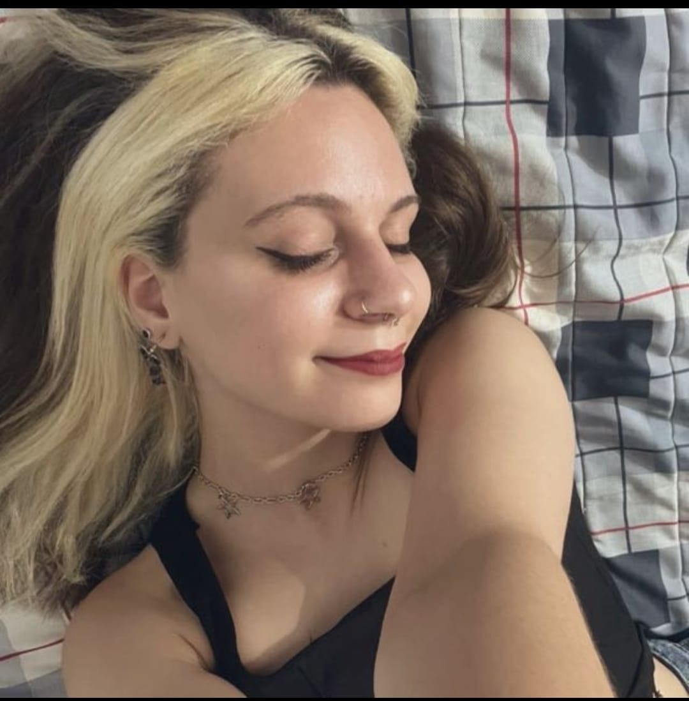

La Luna en la Oscuridad de las Redes Sociales
En un mundo donde las redes sociales son la moneda de intercambio de opiniones y juicios, Luna se encontraba perdida en el tumulto virtual. Apasionada seguidora de Lando Norris, no dudaba en expresar sus pensamientos con fervor. Sin embargo, su último comentario desató una tormenta que la sumergió en la oscuridad del escrutinio público.
"Logan Sargeant debería dejar de ser victimizado", escribió Luna, sin pensar en las consecuencias de sus palabras. El estallido fue inmediato. Una marea de críticas y reproches inundó su perfil, eclipsando cualquier otro contenido que hubiera compartido. La magnitud del ratio, casi 9k likes en su contra, la dejó sin aliento.
A pesar de ser una presencia recurrente en la controversia en línea, Luna no era solo una cara en la multitud virtual. Tras el velo de los comentarios incendiarios y las acusaciones, se escondía una mente aguda y un espíritu trabajador. Aunque su pasión por la Fórmula 1 la llevaba a situaciones complicadas, su inteligencia y dedicación la guiaban en su camino fuera de las redes sociales.